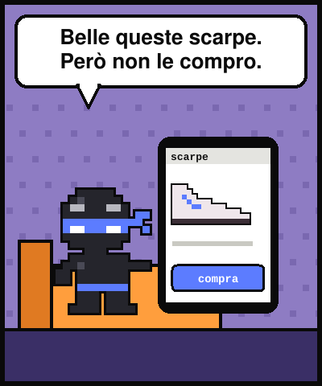
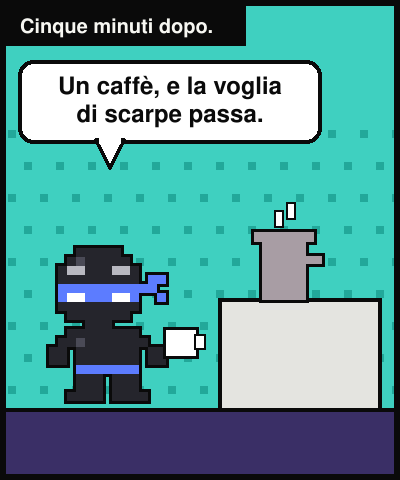
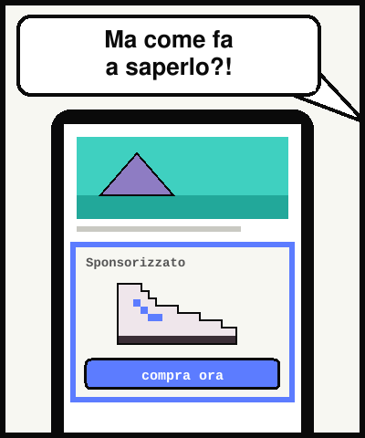
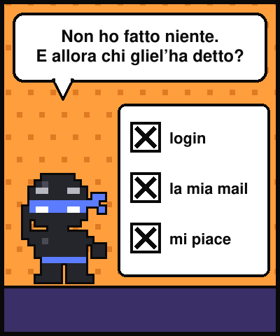
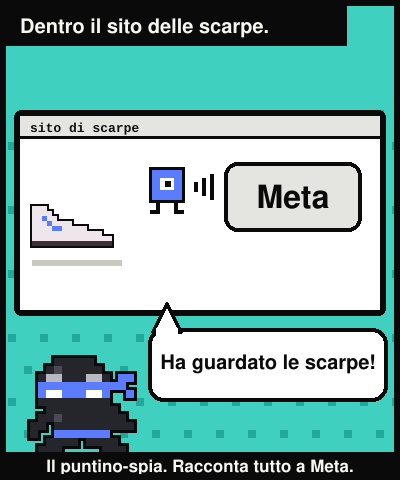
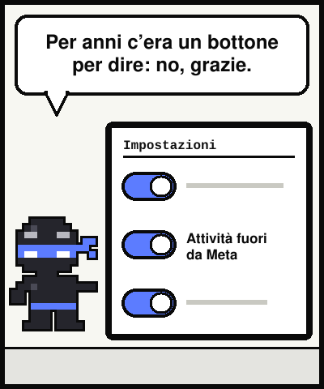
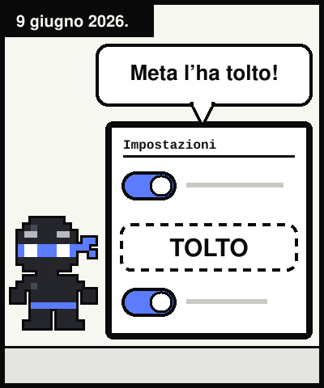
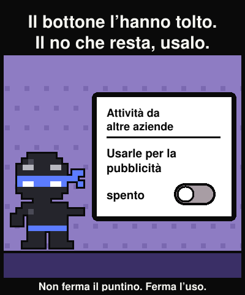

Lezione dal 2077 · n.002
Cerco l'interruttore per staccare da Meta quello che faccio fuori da Meta. L'interruttore c'era. Meta ha annunciato che lo toglie.








Guardo delle scarpe su un sito. Non compro. Dopo un caffè, su Facebook, ci sono le stesse scarpe.
Non ho fatto login né messo «mi piace». E allora chi glielo ha detto?
Un puntino invisibile, il pixel di Meta, sta in moltissimi negozi e le racconta cosa guardi. Il 9 giugno 2026 Meta ha annunciato che ritira l'impostazione «La tua attività fuori dalle tecnologie di Meta». Resta «Attività da altre aziende»: decide se Meta usa quei dati, non se le arrivano.
Il cambio arriva Paese per Paese: da te può essere già avvenuto. Vai a guardare.
«Quando un'azienda semplifica le impostazioni, guarda bene quale hanno semplificato via.»